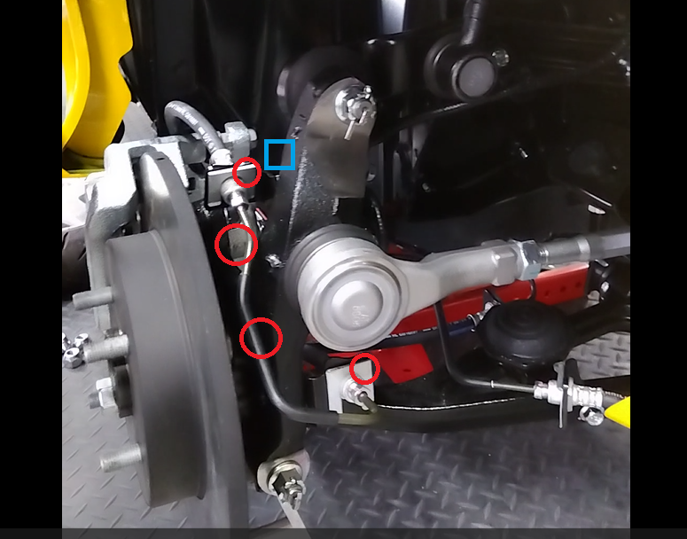
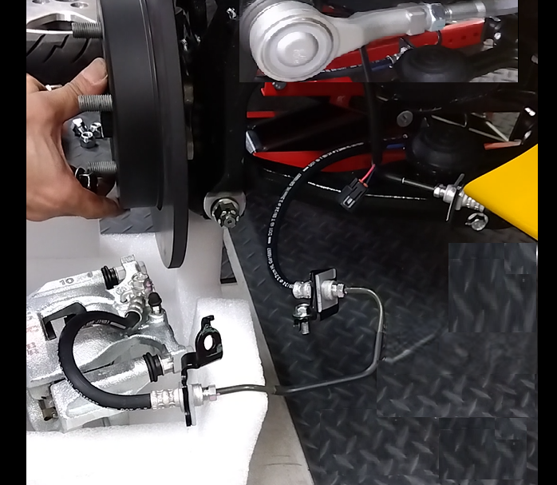
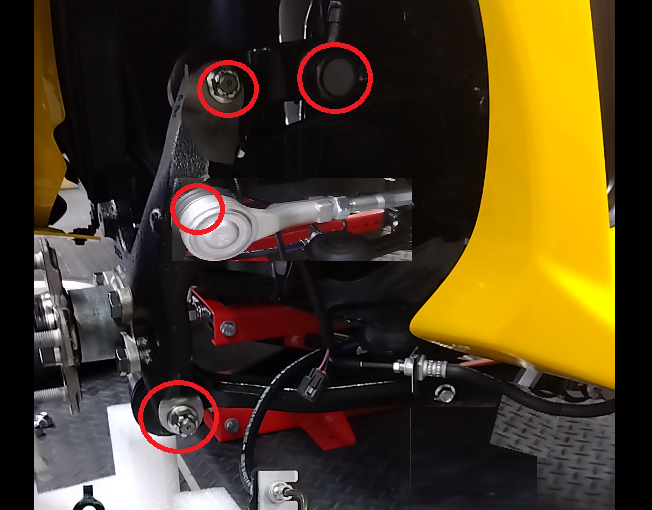
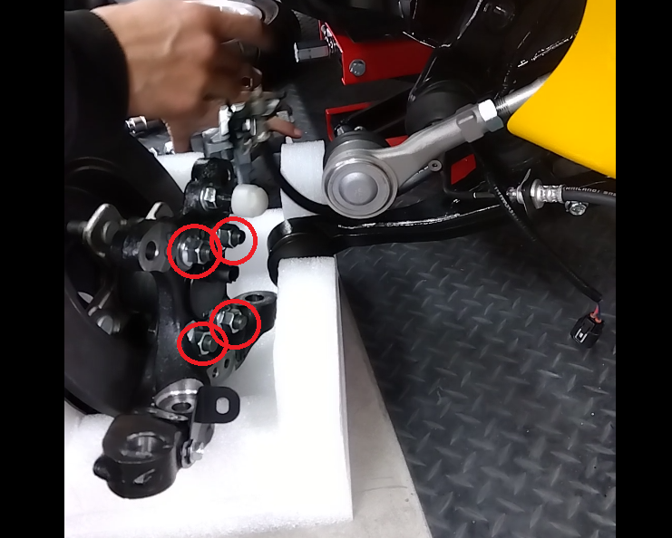
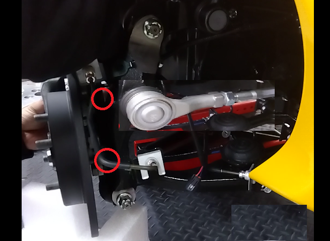
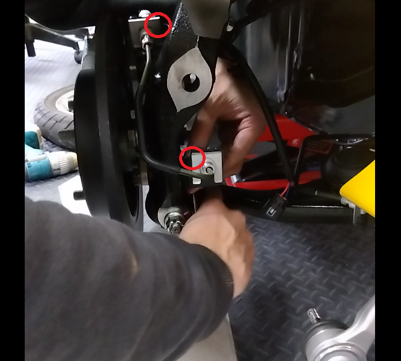

7-1-2 フロントアクスル
構成図
|
1 |
HUBBEARING ASSY, FR AXLE W/SENSOR (D2410-B0000) |
2 |
KNUCKLE, FR RH (D3111-B1000-A) KNUCKLE, FR LH (D3121-B1000) |
|
3 |
ARM SUB-ASSY, SUSPENSION LWR, RH (D8603-B1000) ARM SUB-ASSY, SUSPENSION LWR, LH (D8604-B1000) |
4 |
ARM ASSY, SUSPENSION UPR, RH (D8610-B1000) ARM ASSY, SUSPENSION UPR, LH (D8620-B1000) |
|
5 |
ROD ASSY, SUSPENSION CONTROL (D8420-B1000) |
6 |
CALIPER ASSY, DISC BRAKE, FR RH (D7710-B1000-A) CALIPER ASSY, DISC BRAKE, FR LH (D7720-B1000-A) |
|
7 |
DISC, FR (D7714-B1000-A) |
8 |
PIN, COTTER (D9551-29250) |
取り外し前作業
-
車両をジャッキアップし、フロントホイールを取り外す。
取り外し手順

1.CALIPER ASSY, DISC BRAKE, FR RHおよびDISC, FR取り外し
-
スピードセンサーコネクターを切り離す。
-
ブレーキパイプを固定しているボルト２本を取り外す。
-
ブレーキキャリパーマウントを固定しているボルト２本を取り外す。

-
ブレーキキャリパーASSY、ブレーキパイプを移動させる。
-
プレートを取り外す。
-
ブレーキディスクを取り外す。

2.AXLE ASSY ,FR RH取り外し
-
コッタピン、ナットを取り外し、ステアリングロッドを切り離す。
-
コッタピン、ナットを取り外し、アッパーアームを切り離す。
-
コッタピン、ナットを取り外し、ロアアームを切り離す。
-
ステアリングナックル、フロントアクスルハブASSYを取り外す。
-
ナット4個を取り外し、フロントアクスルハブASSYを取り外す。
取り付け手順
取り外し手順と逆の順番で取り付ける。

1.フロントアクスルハブASSY取り付け
-
フロントアクスルハブASSYをステアリングナックルに取り付ける。
2.フロントアクスルASSY取り付け
-
フロントアクスルASSYをアッパーアーム、ロアアームに取り付ける。
-
フロントアクスルASSYにステアリングロッドを取り付ける。
-
アッパーアーム取付用ナットを締め付ける。
-
ロアアーム取付用ナットを締め付ける。
-
ステアリングロッド取付用ナットを締め付ける。
-
ナットを規定トルクで締め付け後、コッタピンを取り付ける。

3.ブレーキキャリパー取付け
-
ブレーキディスクを取り付ける。
-
プレートを取りつけ、ナットを仮締めしてブレーキディスクを固定する。
-
ブレーキキャリパーASSYを取り付ける。

-
ブレーキパイプを固定しているボルト２本を取り付ける。
-
スピードセンサーコネクターを取り付ける。